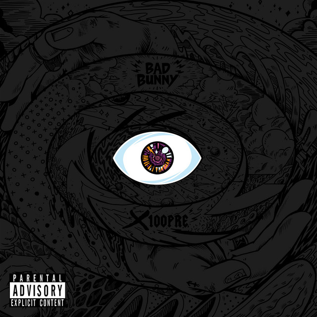

Mi nombre es Ángel Pinto Diaz
Soy estudiante de Campus FP y voy a realizar mi trabajo de Aplicaciones Web en el cual hablaremos sobre el artista de trap Badd Bunny junto a dos de sus álbums:
-X100pre

-Un verano sin ti
Ángel Pinto Díaz-Sistemas Microinformaticos y redes